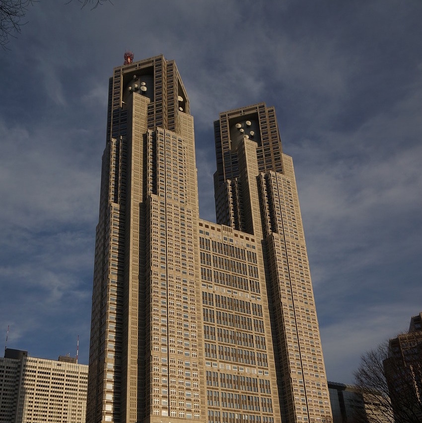
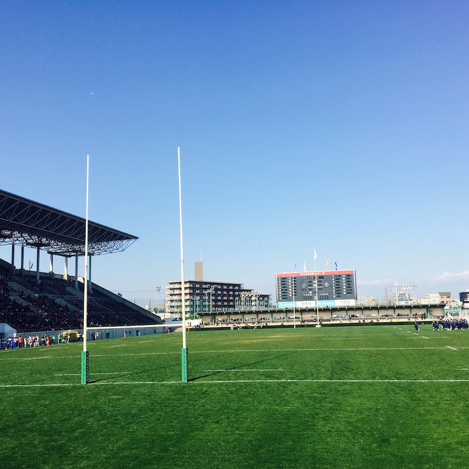

About
-
1991.03 誕生
-
2009.04 入学 Waseda University
University of California, Los Angeles Extension 留学
Vancouver Fashion Week INTERN
BayCurrent Consulting,Inc. INTERN
Recruit Co.,Ltd. INTERN
Cajon,Inc. INTERN
-
2014.04 新卒入社 BayCurrent Consulting,Inc.
-
2016.04 入社 Cajon,Inc.
Skills
営業
採用
事業企画
広告運用
History
-

1991.03.17
BIRTH
埼玉県新座市出身。父親以外の両家全親戚が公務員(教員)という家庭環境で育った私は、とにかく道を踏み外さないようにマジメに育てられた。ちなみに現在は父も公務員になり、妹も某役所に就職し全員公務員となった。テレビのチャンネルはNHK。
-
〜2006.03
〜JUNIOR HIGH SCHOOL
とにかく外で遊ぶのが大好きで、水泳、少林寺拳法、野球、陸上などさまざまなスポーツにチャレンジした一方で、高校受験に失敗し唯一滑り止めで受けていた進学校へ進学する。
-

2006.04〜2009.03
HIGH SCHOOL
高校時代はラグビーにのめり込み、脳震盪や骨折手術などを見舞われるがなんとか生き延びる。最後の大会では１トライ差で敗れ、1トライの重みを痛感する。
-
2009.04〜2014.03
UNIVERSITY-2009〜2011-
将来自分が何をしたいのかよくわからず、そもそも世の中にどんな仕事があるか知らなかったため、1年時には就活生向け企業合同説明会に参加してみるもイメージが湧かず、とりあえず公務員を目指すことに。しかしながら、一転して今度は海外に興味を持ち、UCLA(University Of California Los Angeles)に短期留学する。
-
2009.04〜2014.03
UNIVERSITY-2012-
海外で働きたいという欲望がでてきたので、今度はカナダに留学し企業で無給のインターンをしながらアルバイトで生計を立てることに。当初はなかなか仕事先が見つからず100枚以上のレジュメを巻き歩く日々。海外での仕事や生活の経験を経て、自分は日本が好きだと知ると同時に、ビジネスに興味を持ち始める。
-
2009.04〜2014.03
UNIVERSITY-2013-
就職活動を早々に切り上げ、様々なインターンに参画。コンサルティング会社にてナショナルクライアントのアライアンス戦略策定プロジェクトにて提案資料の作成やユーザインタビューを推進。その後、リクルートのホットペッパーグルメの新規エリア開拓営業に従事し、1日30件の飛び込み営業を経験。さらに、ベンチャー企業にてダイビングのポータルサイト立ち上げにおける新規店舗開拓営業に従事。
-
2014.04〜2016.03
CONSULTING FIRM
従業員1,000名の経営からITまで支援する総合コンサルティングファームに入社し、本社勤務の社長直下配属となる。ナショナルクラインアント向けに新規プロジェクト提案やコンサルタントのマネジメント業務に従事した後、人事部にて新卒採用業務を従事。会社が株式上場するタイミングを迎え、事業を創る側に回るために転職。
-
2016.04〜
IT VENTURE
一転して当時10名のベンチャーへ転職。営業、事業企画、広告運用、採用、法務、代理店開拓及び育成、資金調達など、事業運営に必要なこと全般を経験。その後、営業組織のマネージャーとして、営業戦略の立案と実行、及びメンバーの育成に従事。
-
Present!